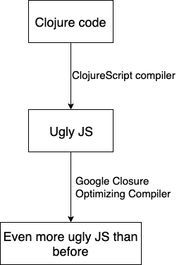

ClojureScript, what is it??
Collections

List
List provides efficient access to the first elements (linked list under the hood).
(def list' '(1 2 3 4))
(let [xs '(1 2 3) ;; (1 2 3)
ys (cons 0 xs)] ;; (0 1 2 3)
(identical? xs (rest ys)))
=> true
Vector
Vector provides efficient index access to its elements.
(def vec' [1 2 3 4])
(vec' 0)
=> 1
Map
Map is a collection abstraction that allows you to store key/value pairs.
(def map' {:a 1 :b 2})
(get map' :a)
=> 1
(map' :a)
=> 1
(:a map')
=> 1
Set
Set stores zero or more unique items of any type and is unordered.
(require '[clojure.set :as s])
(def set' #{1 2 3 10})
(set' 0)
=> nil
(set' 10)
=> 10
(s/union #{0 1 2} #{1 2 3})
=> #{0 1 2 3}
(s/difference #{0 1 2} #{1 2 3})
=> #{0}
(s/intersection #{0 1 2} #{1 2 3})
=> #{1 2}
(s/select odd? #{0 1 2})
=> #{1}
(filter odd? #{0 1 2})
=> (1)
Seq
(assoc [1 2 3] 0 9)
=> [9 2 3]
(assoc {:a 1 :b 2} :a 9)
=> {:a 9 :b 2}
(conj [1 2 3] 9)
=> [1 2 3 9]
(conj '(1 2 3) 9)
=> (9 1 2 3)
(conj {:a 1 :b 2} [:c 3])
=> {:a 1 :b 2 :c 3}
(conj #{1 2 3} 4)
=> #{1 2 3 4}
Metaprogramming
Clojure is also a dialect of LISP (LISt Processing language) by design. The aim was to make the language more extensible.
Clojurescript allows you to write code that writes code (homoiconicity).
Macros
(defmacro infix
[infixed]
(list (second infixed) (first infixed) (last infixed)))
(+ 1 1)
=> 2
(infix (1 + 1))
=> 2
Macros for styled components
JS
Macros for styled components
CLJS
(defstyled sub-item-number
:span
{:flex (str "0 0 " (polished/rem 54))
:margin-left "auto"
:text-align "end"
:overflow "hidden"
:text-overflow "ellipsis"})
...
(sub-item-number "123")
...
(js/React.createElement
(-> component meta :react-component)
#js {}
"123")
Threading macros
Thread-first macro
(def user {:first-name "Alex"
:last-name "Bykbaiev"})
=> {:first-name "Alex"
:last-name "Bykbaiev"}
(-> user
(update :full-name
#(str (:first-name %)
" "
(:last-name %)))
(assoc :mental-age 54))
=> {:first-name "Alex"
:last-name "Bykbaiev"
:full-name "Alex Bykbaiev"
:mental-age 54}
(assoc (update user
:full-name
#(str (:first-name %)
" "
(:last-name %))))
:mental-age
54)
Threading macros
Thread-last macro
(def numbers [1 2 3 4 5 6 7 8 9 0])
(take 2 (filter odd? (map inc numbers)))
=> (3 5)
(->> numbers
(map inc)
(filter odd?)
(take 2))
=> (3 5)
Threading macros
Thread-as macro
(def points {:vals [1 2 3 4 5 6 7 8 9 0]})
(take 2 (filter odd? (map inc (get points :vals))))
=> (3 5)
(as-> points $
(get $ :vals)
(map inc $)
(filter odd? $)
(take 2 $))
=> (3 5)
Threading macros
Thread-some macros
(def user {:name "Alex"})
(-> user
(get :mental-age) ;; => nil
(str " years"))
=> " years"
(some-> user
(get :mental-age)
(str " years"))
=> nil
Threading macros
Thread-cond macros
(def month-of-birth "Jan")
(def motivating-Mars? true)
(def equalizing-Saturn? false)
(cond-> []
(= month-of-birth "Jan") (conj "Capricornus")
(= month-of-birth "Feb") (conj "Aquarius")
;; ...
motivating-Mars? (conj "You would be unstoppable as the moon forms an energetic alignment to driven Mars")
equalizing-Saturn? (conj "Strike a balance between visionary thinking and pragmatic planning"))
=> ["Capricornus" "You would be unstoppable as the moon forms an energetic alignment to driven Mars"]
Transducers

(def xs [1 2 3 4 5 6 7 8 9 0])
(->> xs
(map inc)
(filter odd?)
(take 2))
=> (3 5)
;; map = transform => reducer => reducer
(def tr (comp (map inc)
(filter odd?)
(take 2)))
(reduce (tr conj) [] xs)
=> [3 5]
(into [] tr xs)
=> [3 5]
(transduce tr conj [] xs)
=> [3 5]
Transducers

Performance

(def xs [1 2 3 4 5 6 7 8 9 0])
(->> xs
(map inc)
(filter odd?)
(take 2))
cljs.user.xs = new cljs.core.PersistentVector(
null, 10, 5, cljs.core.PersistentVector.EMPTY_NODE, [(1),(2),(3),(4),(5),(6),(7),(8),(9),(0)], null
);
cljs.core.take.call(
null,(2),cljs.core.filter.call(
null,cljs.core.odd_QMARK_,cljs.core.map.call(
null,cljs.core.inc,cljs.user.xs
)
)
);
Ecosystem
- Leiningen ~ npm (dependencies + scripts)
- shadow-cljs ~ module bundler
- Reagent/Om/Rum - React wrappers
- Re-frame - Redux on steroids


There is always a fly in the ointment

Bundle size
RealWorld Comparison 2020Performance
Memory
Dynamic type system

Support
 clojurists together
clojurists together
No popular source of knowledge
JS - please, read the documentation, there are also learnjavascript, tonns of "Learn JS in 10 mins", video courses, books, blog posts etc.
ClojureScript - hmm... we have Cheatsheet, maybe some API docs, 2-3 books (it's difficult to find, but you should try!)
Job opportunities
It's difficult both to find a job and to hire

How and why we use ClojureScript in production
We all write Clojure
ClojureScript is an awesome tool to make things fast
Performance
Onsite events - up to 10k attendees
Virtual events - up to 5k attendees
Our stack
Backend: Ring (HTTP requests), Compojure (routing), Aleph (framework), HugSQL (DB requests), prismatic/schema (declarative data description and validation), custom RPC protocol
Frontend: Reagent/Rum + re-frame